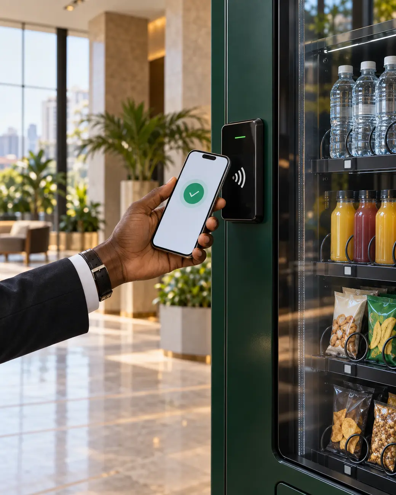

Refreshments beyond cafeteria hours

Smart vending by Nafaka Foods
Everything they want.
Right where they are.
A premium, fully managed snacks and drinks experience for workplaces, institutions and commercial buildings.
UG / 2026
01
A better building experience
The easiest amenity your building will ever add.
Give employees, tenants and visitors instant access to refreshments—without adding a kitchen, staffing a counter or managing inventory.
See what we manage ↘Operational burden for your facility team
Accountable partner from setup to refill
Not just a vending machine.
A quiet upgrade to how your space feels.
02
What your space gains
Time stays inside
Fewer off-site refreshment runs means less downtime and a smoother working day.
People feel considered
A useful amenity that improves workplace comfort and the everyday tenant experience.
Your property feels current
A clean, technology-enabled service that signals a modern, well-run facility.
The space can earn
Choose an agreed fixed-rent or revenue-sharing model suited to your property.
03
Built around convenience
Smart at the front.
Solid behind it.
A simple self-service moment for the customer, backed by professional food operations from Nafaka Foods.
Pay without friction
Cash and cashless options through a clear, easy-to-use interface.
Choose what works
Water, juices, soft drinks, energy drinks, crisps, biscuits, confectionery and healthier options.
Available around the clock
Reliable access for normal hours, overtime, weekends and late shifts.

Carry on.
04
A fully managed model
We run the service.
You provide the space.
A clear partnership with defined responsibilities and one point of contact.
Managed byNafaka Foods
- 01Supply the vending machine
- 02Install and commission it
- 03Stock and replenish products
- 04Monitor inventory and usage
- 05Maintain and support operations
Provided byYour facility
- 01A visible, accessible placement area
- 02Power connectivity at agreed terms
- 03Everyday safety and asset security
Everything else stays with us.
05
Designed for active spaces
Where people move,
Nafaka meets them.
Office buildings
Hospitals
Universities
Banks
Airports
Factories
Government facilities
Public spaces
06
From idea to live service
Four clear moves.
One seamless launch.
We assess the opportunity, agree the model, install professionally and remain responsible after launch.
- 0101—02
Assess
Inspect foot traffic, power and placement.
- 0203—04
Agree
Confirm the commercial and facility terms.
- 0305—06
Install
Deliver, connect, test and stock.
- 04Ongoing
Operate
Monitor, replenish, maintain and support.
07
Food expertise since 2016
Rooted in food.
Ready for what’s next.
Nafaka Foods is a legally registered Ugandan food supply, distribution and value-addition company. Smart vending extends the same promise we built in grain: quality products, consistently delivered.
QualityConsistencyCustomer centricInnovationSustainability
10Years of food supply and distribution experience in Uganda, now behind every machine we place.
08
Common questions
Before you approve it.
Straight answers to what most facility and procurement teams ask before signing off on a placement.
Does our building pay anything for the machine or installation?
No. Nafaka Foods supplies, installs and commissions the machine at our own cost. Your facility simply provides a visible placement area, power connectivity and everyday security — everything else stays with us.
What happens if a machine breaks down or runs low on stock?
We monitor inventory and usage ourselves and handle restocking, maintenance and support directly — it is not something your facility team needs to manage or chase.
Can we do revenue-sharing instead of fixed rent?
Yes. Depending on your property's foot traffic, we agree either a fixed-rent arrangement or a revenue-sharing model — whichever suits your building better.
What products can be stocked in the machine?
Water, juices, soft drinks, energy drinks, crisps, biscuits, confectionery and healthier snack options — the mix can be tuned to what suits your building's audience.
Do you place machines outside Kampala?
Yes. We serve commercial buildings and institutions across Uganda, including Kampala, and are extending the service into South Sudan.
How quickly can a machine be installed once we agree?
Our process is built to move fast once terms are agreed: assess, agree, install, then operate. There is no lengthy build-out — just delivery, connection, testing and stocking.
Is there a minimum space or foot traffic requirement?
There's no fixed minimum. During the free site assessment we review your traffic, available space and power access, then recommend whether a placement makes sense and which model fits.
09
Start with the right spot
Let’s bring better access to your building.
Request a complimentary site assessment. We’ll review traffic, placement and power, then recommend the right setup.